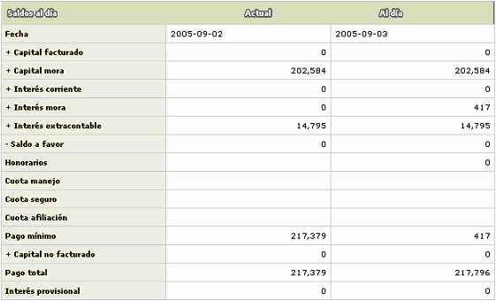

Saldos |
En este formulario que se invoca desde el detalle consulta de la tarjeta, en el hipervínculo información básica, la entidad puede consultar toda la información relacionada con los saldos de la tarjeta presentados por diferentes criterios.
Toda la información desplegada es solo de consulta por lo cual ninguno de los formularios de saldos contiene las opciones Adicionar, Actualizar ni Eliminar.
La opción cuenta con ocho hipervínculos desde los cuales se invocan los formularios en los cuales el usuario encuentra agrupada la información de saldos correspondiente la tarjeta que se está consultando: Consolidado, Monedas, Líneas de crédito, Cuotas, Comisiones, Saldos facturación, Saldos concepto y Proyectar. Por defecto, cuando se ingresa al formulario siempre se despliega en el hipervínculo Consolidado y la información se presenta en cada campo tanto a la fecha actual como el dato que tenía la tarjeta en la fecha de la última facturación.

Descripción de campos
|
Fecha |
Campo que muestra en formato YYYY-MM-DD la fecha a la que corresponden los datos desplegados. |
Capital facturado |
Muestra el valor correspondiente para las fechas respectivas, del capital diferido cobrado al cliente dentro del pago mínimo. |
Comisión facturada |
Campo que señala el monto de las comisiones cobradas al cliente dentro del pago mínimo. |
Total capital facturado |
Indica la sumatoria del capital y las comisiones cobradas al cliente dentro del pago mínimo. |
Capital mora |
Campo en el que se muestra el monto de capital no cubierto por el cliente en las facturaciones anteriores a la fecha indicada. |
Comisión mora |
Este campo indica el monto de las comisiones no cubiertas por el cliente en las facturaciones anteriores. |
Total capital mora |
Contiene la sumatoria del capital y las comisiones que no fueron cubiertas por el cliente en las facturaciones anteriores. |
Interés corriente |
En este campo se indica el valor del interés de financiación que la entidad le cobra el cliente por los saldos pendientes a la fecha sobre los consumos efectuados. |
Interés mora |
Campo que muestra el monto de los intereses de sanción generados por la entidad sobre las porciones de capital no cubiertas por el cliente en facturaciones anteriores. |
Interés extracontable |
En este campo se indica el monto de los intereses que de acuerdo con la altura de mora o la calificación de la tarjeta, se deben causar sobre los saldos de la tarjeta. |
Saldo a favor |
Despliega el monto a favor del cliente resultante de pagos hechos en exceso, reversiones de transacciones de consumos y ajustes entre otras posibles causas. |
Pago mínimo |
En este campo se indica el monto que el actor debe cancelar para cubrir la obligación y no incurrir en mora. |
Capital no facturado |
Muestra el monto de los consumos diferidos que se encuentran pendientes de facturar y no han sido incluidos aún dentro del pago mínimo. |
Comisión no facturada |
En este campo se indica el monto de las comisiones que aún no han sido incluidas dentro del pago mínimo de la tarjeta. |
Saldo pendiente |
Campo que indica el monto a cargo del cliente y que por efectos de ajustes y otro tipo de eventos se encuentra pendiente de ser facturado y cobrado. |
Total capital no facturado |
Indica la sumatoria de los montos no incluidos dentro del pago mínimo |
Pago total |
Este campo contiene el valor total adeudado por el cliente a la entidad como resultado de las utilizaciones y consumos hechos con la tarjeta. |
Interés provisional |
Despliega los intereses calculados de manera provisional sobre transacciones que tengan la condición de condonar intereses el primer mes, de acuerdo con lo definido en transacciones por empresa. |
Autorizaciones |
Este campo aplica solo para la fecha actual y señala el monto de las autorizaciones o aprobaciones otorgadas por la entidad y que se encuentran vigentes. |
Cupo total |
Contiene el monto total del cupo asignado a la línea principal de la tarjeta. |
Cupo disponible |
En este campo se indica el valor del cupo que puede ser utilizado por el cliente para efectuar consumos con la tarjeta. |
Saldo promedio |
Indica el promedio ponderado del saldo de la tarjeta en cada fecha que se incrementa con los consumos y disminuye por lo pagos efectuados. Se utiliza especialmente en el mercado norteamericano para calcular los intereses sobre el saldo promedio diario (ADB, average daily balance). |
Cupo global |
Campo que muestra el monto total asignado a la línea principal y las líneas independientes de la tarjeta. |
Edad mora |
Muestra la edad de mora que tenia la tarjeta en cada una de las fechas desplegadas. |
Capital mora 1... Capital mora 12 |
Campos que muestran el monto de capital no cubierto por el cliente en cada altura o edad de mora. |
Comisiones: si el actor invoca el hipervínculo Comisiones, se despliega un nuevo formulario con el detalle de las comisiones cobradas al cliente.

Descripción de campos
Cuota de manejo / seguro / afiliación |
Este campo indica el monto de las comisiones cobradas al cliente por concepto de cuota de manejo, seguro y afiliación respectivamente. |
Costo de renovación / reexpedición / reactivación / reposición |
Campo que señala el monto de las comisiones cobradas al cliente por cada uno de los eventos, en caso que estos se hubieren presentado y de acuerdo con lo parametrizado para el producto al que pertenece la tarjeta. |
Devolución reembolso |
Este campo contiene la cantidad de unidades de la misma mercancía o premio que el tarjeta habiente reclamó o redimió. |
Costas judiciales |
Campo que registra el monto que se le cobra al cliente por concepto de gastos judiciales. |
Honorarios abogado |
En este campo se indica el monto de los honorarios de abogado cargados al cliente como resultado de los cobros jurídicos efectuados por la entidad. |
Otras comisiones |
Campo en el que se muestra el monto de otras comisiones no incluidas dentro de los items anteriores y que le han sido cobradas al cliente. |
Notas débito |
En este campo se indica el monto cargado al cliente por concepto de las notas débitos generadas a favor de la entidad. |
Notas crédito |
Campo que señala el monto abonado al cliente como resultado de las notas crédito generadas por la entidad a favor del cliente. |
Proyectar: si el actor invoca el hipervínculo Proyectar, se despliega un nuevo formulario en el cual el usuario puede hacer una proyección de los saldos de la tarjeta a una fecha posterior a la actual pero inferior a la fecha de la próxima facturación.


Descripción de campos
|
Fecha |
Campo que muestra en formato YYYY-MM-DD la fecha actual y la fecha a la cual se está haciendo la proyección de los saldos. |
Capital facturado |
Muestra el valor correspondiente para las fechas respectivas, del capital diferido cobrado al cliente dentro del pago mínimo. |
Capital mora |
Campo en el que se muestra el monto de capital no cubierto por el cliente en las facturaciones anteriores a la fecha indicada. |
Interés corriente |
En este campo se indica el valor del interés de financiación que la entidad le cobra el cliente por los saldos pendientes a la fecha sobre los consumos efectuados. |
Interés mora |
Campo que muestra el monto de los intereses de sanción generados por la entidad sobre las porciones de capital no cubiertas por el cliente en facturaciones anteriores. |
Interés extracontable |
En este campo se indica el monto de los intereses que de acuerdo con la altura de mora o la calificación de la tarjeta, se deben causar sobre los saldos de la tarjeta. |
Saldo a favor |
Despliega el monto a favor del cliente resultante de pagos hechos en exceso, reversiones de transacciones de consumos y ajustes entre otras posibles causas. |
Honorarios |
Campo que señala el monto de los cargos que por concepto de honorarios se generan al cliente. |
Cuota manejo / seguro / afiliación |
Despliega el monto correspondiente a cuota de afiliación, seguro y manejo cargadas al cliente. |
Pago mínimo |
En este campo se indica el monto que el actor debe cancelar para cubrir la obligación y no incurrir en mora. |
Capital no facturado |
Muestra el monto de los consumos diferidos que se encuentran pendientes de facturar y no han sido incluidos aún dentro del pago mínimo. |
Pago total |
Este campo contiene el valor total adeudado por el cliente a la entidad como resultado de las utilizaciones y consumos hechos con la tarjeta. |
Interés provisional |
Despliega los intereses calculados de manera provisional sobre transacciones que tengan la condición de condonar intereses el primer mes, de acuerdo con lo definido en transacciones por empresa. |